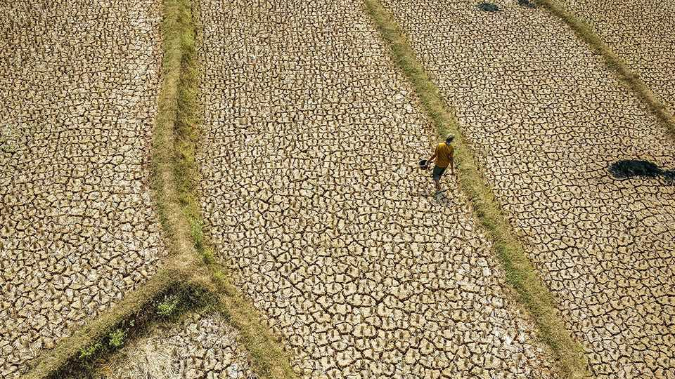
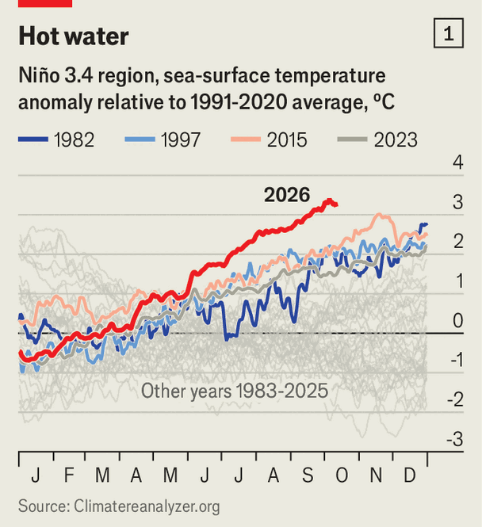
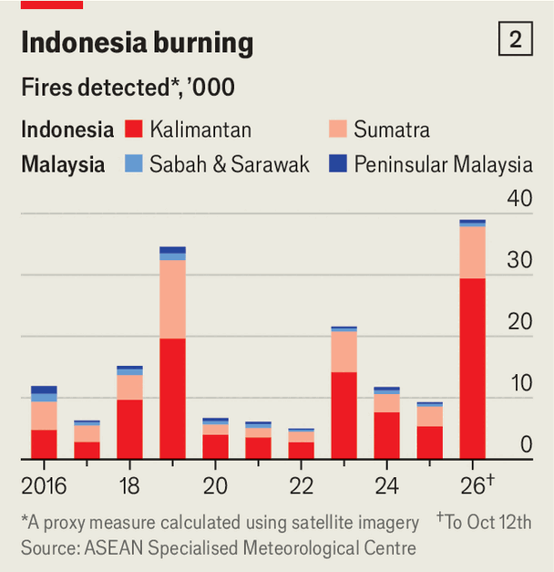
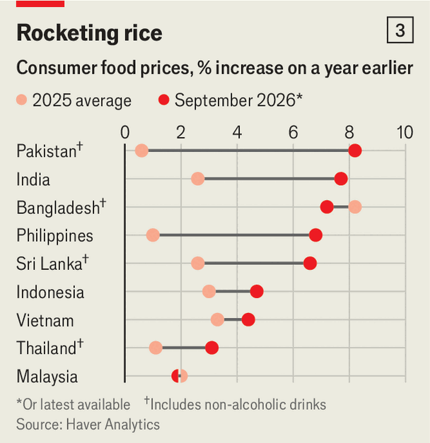
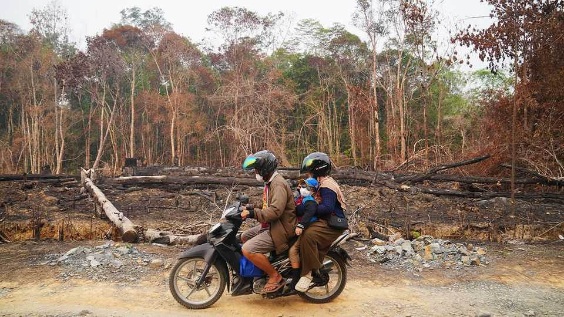

Can Asian governments prevent a food shock?
El Niño is hitting countries that are already dealing with an energy shock

Oct 15th 2026
BACK IN MAY about two tonnes of dead fish floated to the surface of a lake in Cambodia. Last month in Indonesia receding water levels in another lake exposed the ruins of Somang, a long-submerged village. In the Philippines officials have warned residents of Manila, the capital, that their water supply may soon be reduced. These events—all caused by hotter, drier conditions—may seem isolated, but taken together they point to the havoc that El Niño could bring in Asia.
The climate pattern is a naturally recurring phenomenon. Every few years a shift in the winds above the eastern Pacific causes hotter and drier conditions in much of South and South-East Asia. This year’s episode, which began in May and is due to peak next month, is unusually fierce. On one daily measure, sea-surface temperature anomalies in the Pacific have already exceeded the peak of every previous event on record (see chart 1). The World Meteorological Organisation expects this El Niño to last into February.

The effects will be global, but Asia is especially exposed: hundreds of millions of its people depend on farms for their livelihoods, and its governments are still grappling with the energy shock from the war in Iran. In many parts of the region, El Niño is already causing damage. India’s monsoon, which supplies nearly 70% of annual rainfall, ended about 13% below normal levels—the driest in a decade. Satellite data suggest that Indonesia is enduring its worst fire season for 11 years (see chart 2). In the Philippines officials say that seven provinces are already experiencing drought, and that the entire country could be in drought by early next year.
The most direct impact will be on food. Farmers who depend on rainfall will be hit hardest, especially in Indonesia, where the main rice crop is planted between October and December, just as El Niño peaks. But irrigated farms are not immune, because the lack of rain is draining reservoirs. In central Thailand that prompted the government to ask farmers not to plant a second rice crop this year.

All this comes on top of the Iran war’s disruption to fuel and fertiliser supplies. The World Bank expects fertiliser prices this year to average 38% more than last year. Higher input costs and extreme weather are squeezing farmers’ incomes, but also contributing to food inflation (see chart 3). India’s annual food inflation rate rose from 2.1% in January to 6% in August; in Sri Lanka it reached 7% in September. Yet the bigger worry is supply. Krungthai, a Thai bank, reckons Thailand’s rice output could fall by 18% between now and the middle of next year. Thailand has plenty of reserves, but other countries have little to fall back on. Bangladesh’s rice stocks amount to less than 4% of its annual consumption, according to data from America’s Agriculture Department.
To gauge which country is most exposed The Economist has built a “vulnerability index” for 11 of Asia’s emerging economies. It combines two sets of measures: how much El Niño could hurt their economies (based on the importance of agriculture to them), and how well governments could cushion the blow (based on indicators of fiscal space and the reach of welfare systems). Sri Lanka, Bangladesh and Cambodia come out worst (data for war-torn Myanmar are patchy, otherwise it would probably top the list). Unsurprisingly, richer countries—Thailand and Malaysia—fare best. The pain takes different forms. In India the risk falls mainly on farmers; in the Philippines and Bangladesh it falls on consumers.

El Niño will generate effects beyond food and agriculture. The Asian Development Bank (ADB) warns it could worsen the energy shock: drying rivers cut hydropower output just as heat raises demand for air-conditioning, pushing countries to burn more coal. Public health is at risk, too. Smoke from Indonesia’s fires has shrouded parts of South-East Asia; on October 12th Singapore’s air was rated the unhealthiest in the world, worse even than Delhi’s.
The economic toll could be enormous, especially because governments are poorly placed to absorb it. A study of the 1997 El Niño found that it cost the global economy nearly $6trn over the next five years—with Asia bearing much of the cost. The United Nations estimates that if this year’s food-and-energy price shock were passed fully onto households (ie, if subsidies and other helpful measures were removed), about 132m more people worldwide would fall into poverty, of whom 91m would be in Asia. As government debts balloon, avoiding this scenario will become harder.
The good news is that governments can see the crisis coming. Better data and forecasting mean policymakers are more prepared than in previous El Niño episodes, says Roshen Fernando of the Asian Development Bank. Alongside building up rice buffers, governments are also trying to help farmers directly. India is nudging growers in parched districts to shift towards planting pulses and other crops; the Philippines, meanwhile, is handing out drought-resistant seeds.

Money needs to be arranged in advance, too. Disaster funds are often released only after disaster strikes. Governments should instead set aside money specifically for El Niño, says Mr Fernando. That could be done by negotiating emergency credit lines and disaster insurance before the peak arrives.
Particularly valuable is “anticipatory action”, which releases cash or other help when forecasts cross predetermined thresholds (such as water levels in a reservoir). The UN thinks every dollar spent in this way can save up to $7 in losses and later aid. Such schemes have been tried in Africa and Central America. But in Asia their coverage has been limited—in part due to a lack of financing. In June the UN’s World Food Programme and its Food and Agriculture Organisation sought $202m to protect 8.8m people in 22 countries, including Afghanistan, Pakistan and the Philippines. So far only $40m has been raised. As rich-country donors tighten their purse strings, prevention has among the first things to be cut.
More than a century ago a particularly intense El Niño caused famines that killed tens of millions of people across India, China and elsewhere. That was largely because nobody saw it coming or knew what to do. Today a far richer Asia knows what lies in store. But forecasts are only useful if governments and donors act on them. ■
For exclusive coverage of Asian politics, economics and security, sign up to Asia Bulletin, our weekly subscriber-only newsletter.